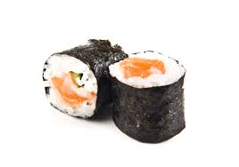

Sushi

Description
Craving sushi but not in the mood to roll? This Lazy Salmon Sushi is the perfect shortcut.
Ingredients
- 3 sheets Japanese yaki nori for sushi
- 300g sushi rice (uncooked)
- 20ml Obento mirin seasoning
- 15g white sugar
- 200g avocado
- 100g sliced smoked salmon
- 60g 50% reduced Kewpie mayonnaise
Steps
- Prep the dish: Line a square baking dish with cling wrap, leaving plenty of overhang to make flipping easier later.
- Cook the rice: Prepare sushi rice as per packet instructions. While still warm, stir through the mirin seasoning and sugar until dissolved. Once cooled slightly, mix in the kewpie mayonnaise.
- Layer the base: Place one nori sheet on the base of the dish. Spread over half the rice mixture evenly.
- Add the fillings: Layer avocado slices, then top with smoked salmon.
- Repeat
- Press & chill – Fold the cling wrap over the top and press everything down firmly to compact.
- Slice & serve – Carefully flip the stack onto a chopping board, unwrap, and slice into squares or rectangles. Serve immediately.
Home